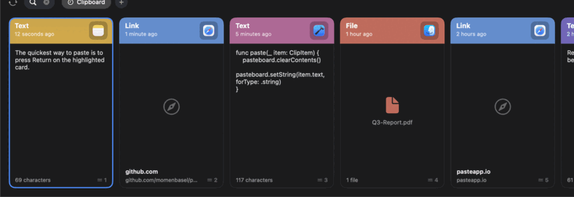

A free, open-source clipboard manager for Mac.
or brew install --cask momenbasel/pesty/pesty

Pesty keeps a history of everything you copy and brings it back with a keystroke. Press the global shortcut and a color-coded strip slides up from the bottom of your screen. Pick a clip with the arrow keys, press Return, and it pastes straight into the app you were using. It is a native SwiftUI reimplementation of the Paste app — and it is free.
Text, links, images, files, rich text, and colors — all remembered.
Each clip is tinted by the app it came from, with a preview and timestamp.
Save the snippets you reuse into named collections that never expire.
Just start typing to filter your whole clipboard history.
Arrows to move, Return to paste, ⌘1–9 to quick-paste.
Everything stays on your Mac. No data collection, no network calls.
| Pesty | Paste | Maccy | |
|---|---|---|---|
| Price | Free / $19.99 on MAS | Subscription | Free |
| Open source | Yes (MIT) | No | Yes |
| Color-coded strip UI | Yes | Yes | No (list) |
| Pinboards | Yes | Yes | No |
| Native (no Electron) | Yes | Yes | Yes |
brew install --cask momenbasel/pesty/pesty
Or download the signed, Apple-notarized DMG from GitHub. Requires macOS 14 (Sonoma) or later. Universal — Apple Silicon and Intel.
Yes — free and open source under the MIT license on GitHub, and installable with Homebrew. A paid convenience build is also on the Mac App Store.
Pesty reimplements the parts of Paste people use every day — the slide-up strip, color-coded cards, pinboards, search, and keyboard pasting — as a free, native, open-source app.
Yes. Nothing leaves your Mac. Pesty has no servers, no analytics, and ignores clips marked concealed by password managers.